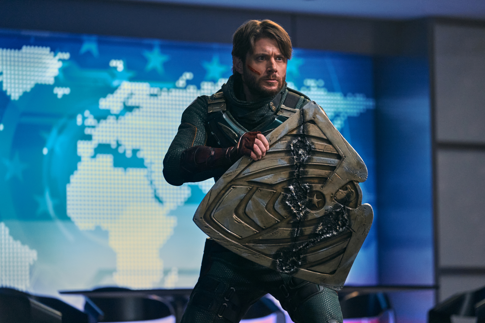

Soldier Boy (real name Benjamin) is one of the two main antagonists of Season 3 of the Amazon series The Boys (along with Homelander). He was America's first and greatest superhero before Homelander and the former leader of the superhero team Payback. As a young man, Soldier Boy helped good triumph over evil in World War II, although this was contested by The Legend, who claimed it was Vought propaganda. With his superhero team Payback by his side, he was said to have fought for liberty and justice for all until his disappearance during a botched military operation in Nicaragua, with the cover story being that he heroically sacrificed his own life to save America from a nuclear power plant meltdown in 1984.
